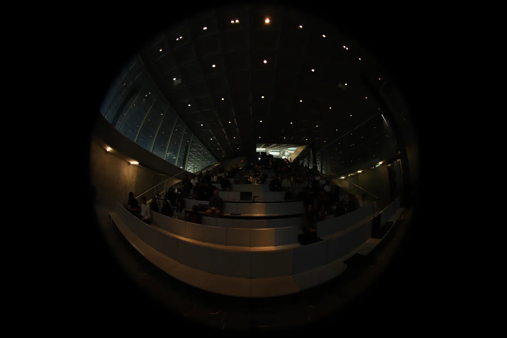
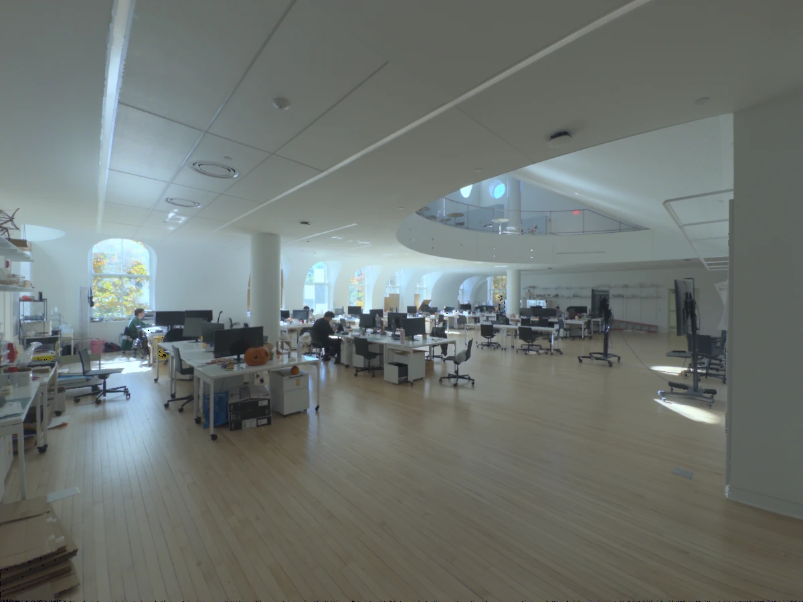
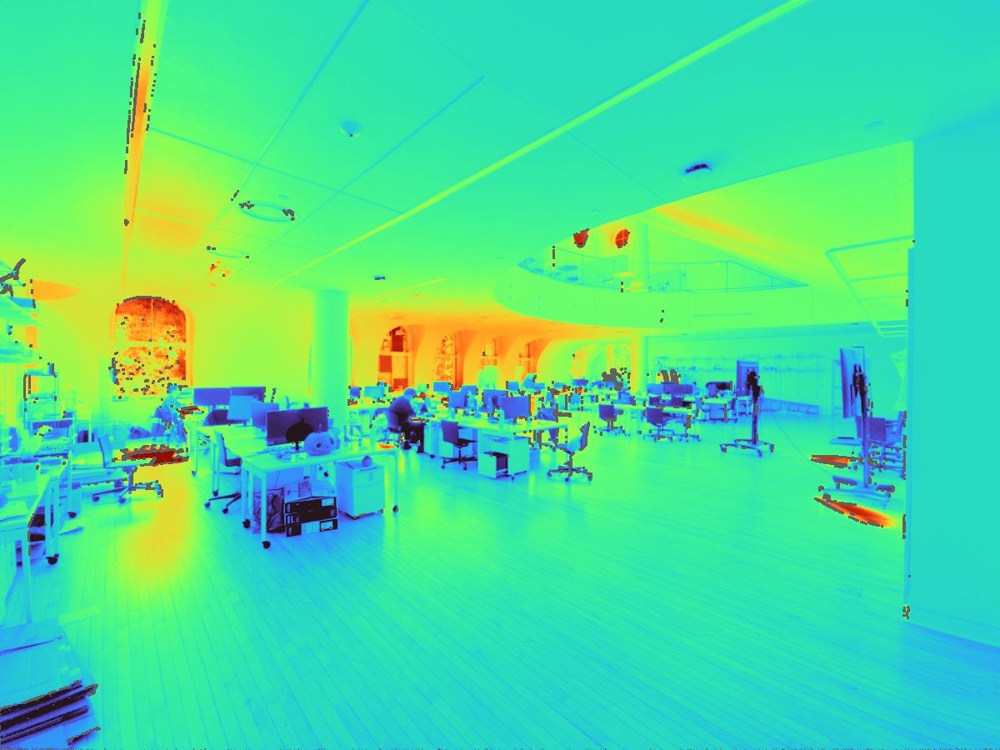
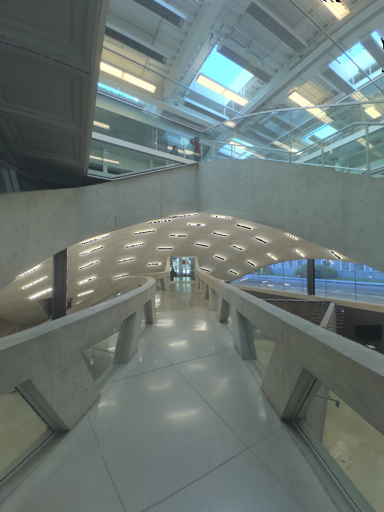
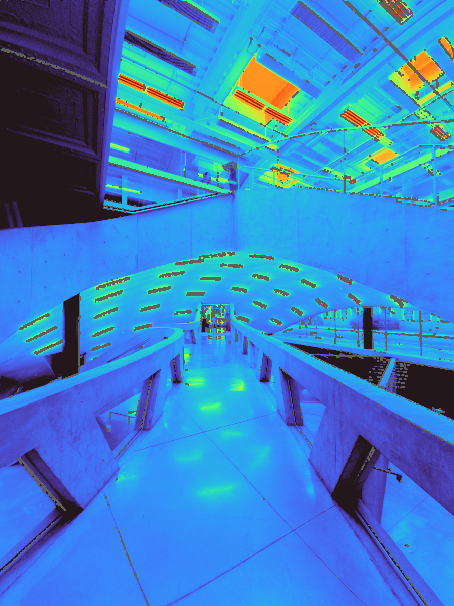

ENVIRONMENTAL SYSTEMS ILUMINANCE · EXPOSURE · CALIBRATION · GLARE
CHAPTER 06
HDR photography.
A calibrated photograph is a measuring instrument. It maps luminance across a whole view, so you can compare daylight designs, check a physical model or analyse glare from an occupant's position. This chapter covers camera setup, exposure brackets, the reference readings that give the image a physical scale, and the checks that tell you whether to trust it.
Adapted from the LumiSnap field guide. LumiSnap merges, calibrates and analyses the captures on desktop and iPhone; the method applies to any HDR tool. About 20 minutes. Section 07 turns the image into design evidence: seven design questions, each with its metric. A field checklist and a short quiz close the chapter.
Think of a window lighting a desk. Illuminance describes how much light arrives at the desk. Luminance describes how bright the desk, the wall or the window is in a particular direction. A calibrated photograph maps luminance across the view.
Luminance L · cd/m²
Light travelling from a surface or source toward the camera or eye. A spot luminance meter measures one small part of the view; a calibrated HDR records many directions at once.
Illuminance E · lx
Light arriving on a plane. A lux meter on a desk faces up; at the eye it faces forward. The position and orientation are part of the measurement. Ev is the vertical illuminance at the eye.
Dynamic range
The ratio between the brightest and darkest values a scene or a sensor can hold. A daylit room with a view of the sky easily exceeds the range of a single exposure.
Clipping
A pixel whose signal has saturated. Its true value is unknown; it only says “at least this bright”.
Figure 1. Illuminance arrives at a plane; luminance leaves a surface toward the eyeEditable SVG ↓
High dynamic range imaging
A camera sensor has a limited usable range: weak signals disappear into noise, while strong signals saturate, or clip. One photograph may preserve the room but lose the window, or preserve the window but lose the room. A bracket records the same scene at several exposure times. The merge combines the useful parts into a high dynamic range (HDR) image.
A linear HDR preserves ratios: twice the value represents twice the light signal. Calibration gives that signal a physical scale. A screen preview compresses the range to make it visible; a false-colour view assigns colours to numbers. Neither a pleasing preview nor a phone's ordinary “HDR photo” proves that the data are calibrated. Keep the numerical Radiance HDR as well as any presentation images [1].
02
STUDY AND VIEW SELECTION
Choose the study
The question decides the lens, the position and the measurements. Decide it before you set up the tripod.
DAYLIGHT AND MODEL STUDIES
Compare light distribution on ceilings, walls and work surfaces, or test a shading or rooflight design. A normal lens can document a selected area. Keep the camera view and false-colour legend consistent between alternatives.
In a physical model, put the lens at the equivalent occupant position. Document materials, glazing, model scale and sky conditions, and keep the camera from blocking openings. Lux readings on a workplane answer a different question from surface luminances in the image.
GLARE FROM AN OCCUPANT'S VIEW
The glare workflow requires a fisheye lens and a complete 180° hemispheric view. Put the lens at the observer's eye position and aim along the intended gaze direction. A narrow image omits light sources and changes their apparent sizes and positions.
A standard iPhone Ultra Wide lens is not a 180° fisheye. Phone captures remain useful for luminance studies; use a characterized fisheye setup for glare. An add-on lens also needs its projection, field of view and vignetting checked.
DGP (Daylight Glare Probability) assesses discomfort from a daylit view. UGR (Unified Glare Rating) is primarily an electric-lighting metric. Interpret each within its intended application.
Section 07 pairs each design question with its metric: glare, perceived brightness, contrast, change over time, reflectance, model validation and eye illuminance.
A single view at one time does not describe a room's annual daylight performance. Combine it with the climate-based metrics and the sun-path studies of Chapter 04.
A separately calibrated sky capture can provide input to a daylight simulation. It needs the sky hemisphere, orientation and a treatment of the sun; an interior photograph alone is not an annual sky model [5].
03
THE FIELD SETUP
Camera setup and position
Bring a tripod, a remote release or timer, a matte neutral target and a calibrated spot luminance meter. A separate illuminance meter is strongly recommended for validation. For glare, add a fisheye that covers the full forward hemisphere on your camera's sensor.
Figure 2. Camera position and view direction, in plan and sectionEditable SVG ↓
Camera controls: what to fix, and why
Control
Practical starting point
Why it matters
Shutter time
Change it for each exposure.
A longer exposure collects more light without changing the lens geometry.
Aperture (f-number)
Fix it for the whole bracket. On an interchangeable-lens camera, f/8 is a starting point to test, not a universal optimum.
Aperture affects depth of field, vignetting and flare. Use corrections measured at the aperture you actually choose.
ISO
A fixed, low native ISO, often 100, when the setup permits.
ISO changes signal gain; it does not collect more photons. More gain can reduce highlight headroom.
Focus, white balance
Focus once and lock it. Use a fixed white balance.
Refocusing and changing colour processing make exposures harder to combine consistently.
Image processing
For JPEGs, use consistent settings; disable automatic contrast, HDR, local tone changes and automatic lens corrections.
A global response curve cannot undo changing local edits. Keep JPEG picture settings tied to their response calibration.
RAW or JPEG. RAW stores sensor data before most of the camera's picture processing. Bayer sensors sample red, green and blue through a filter mosaic; software reconstructs a colour image. RAW still needs correct black-level, exposure and colour handling, followed by physical validation. JPEG has already been processed and compressed, so its nonlinear brightness response must be accounted for [1].
On iPhone, LumiSnap manages adaptive Bayer RAW brackets on supported devices and lenses. Most phone lenses have a fixed aperture. Stabilize the phone, keep one supported lens, and inspect the saved coverage view after capture (Section 08). LumiSnap Desktop merges camera JPEG brackets; it does not develop arbitrary camera RAW files.
04
THE CAPTURE STRATEGY · EQ. 6.1
Exposure brackets
One exposure stop (1 EV) doubles or halves the collected light. At fixed aperture and ISO, 1/30 s collects about twice as much as 1/60 s. Start with overlapping exposures roughly 1–2 stops apart, then extend the range to suit the scene. The number of frames is a consequence of coverage, not a target.
stops between two exposures, same aperture and ISOstopst = shutter time in s(6.1)
Figure 3. Overlapping exposures merge into one linear HDREditable SVG ↓
Check the short exposure. Important bright sources must remain below clipping in every colour channel in at least one frame. Inspect source pixels and coverage, not just the overall histogram.
Check the long exposure. Dark surfaces you intend to measure need usable signal above noise. Keep enough intermediate frames to overlap.
Watch the scene. Clouds, moving blinds, flickering lights and people break the assumption that only the exposure changed. Capture promptly and repeat if conditions change.
Explore a real fisheye bracket
These are JPEGs from a lecture-hall capture: Canon EOS 6D Mark II, 8 mm fisheye, f/4, ISO 200. The 11 frames run from 1.3 s to 1/50 s, about six stops between the endpoints (Eq. 6.1: log₂(1.3 / 0.02) ≈ 6.02), with uneven spacing. They span about a minute. Use it as an example to inspect, not as a recommended bracket or a certified measurement.
ELEVEN ORIGINAL EXPOSURES5 / 11
IMG_0422.JPG · 1/4 s · f/4 · ISO 200
INPUTS
longer · brightershorter · darker
Use the arrow keys or drag. Compare the front desks with the ceiling lights, and look for people who move between frames.
1.3 s · room detail1/4 s · intermediate overlap

1/50 s · highlight check
LIMIT
HDR cannot repair missing measurements. A source clipped in every exposure remains unknown. Direct sun and strong reflections can exceed an ordinary bracket's range; they can also create flare that spreads light across the image. A characterized neutral-density filter can help capture brighter sources, but it changes transmission and colour and needs its own correction. A darker-looking preview does not show that the sun is measured [2, 3].
05
MEASURE WHILE YOU CAPTURE · EQ. 6.2
Reference readings
Recognize the sensor, check the unit, then choose how to position it. A white diffuser is placed where you want to measure arriving light: an illuminance meter reads lux. A lens and viewfinder are aimed at the surface you want to measure: a spot luminance meter reads cd/m².
Figure 4. Illuminance meter and spot luminance meterEditable SVG ↓Figure 5. Three measurements, three questionsEditable SVG ↓
A · Spot luminance: set the image scale
Measure several matte, evenly lit patches visible in the image, covering darker and brighter surfaces. Aim from near the camera position and record exactly which patch you measured. Avoid glossy surfaces, edges, shadows and clipped areas. A grey card is convenient, but “18% grey” does not specify its luminance: you still need the meter reading.
The target must fill the meter's acceptance cone. For a meter with acceptance angle θ at distance D, the measured spot has the diameter:
diameter of the measured spot1° at 3 m → d ≈ 5.2 cm(6.2)
Use a uniform patch clearly larger than d. In LumiSnap Desktop, choose the matching meter angle; on iPhone, choose an image sampling region contained in the same patch. Take repeat readings and reserve at least one target as an independent check.
Figure 6. Spot targets on the supplied portrait capture (ARCH 5611 course readings)Editable SVG ↓
B · Vertical illuminance: check the whole view
Place a cosine-corrected lux sensor at the lens position, vertical and facing along the camera axis for a level view. Measure before and after the bracket without shading it. This records Ev, the illuminance arriving on the eye plane. Compare it with the illuminance integrated from the corrected hemispheric HDR; a narrow view misses part of that total. Before and after readings also reveal changing daylight; if conditions change appreciably, repeat the sequence [2].
C · Workplane illuminance: test the design
For a desk or physical daylight model, place the lux sensor horizontally, facing up, on a documented grid at the intended workplane. This measures light reaching the task. It does not replace a spot luminance reference or a vertical eye-plane reading. There is no universal lux-to-cd/m² conversion: even the ideal diffuse-surface relationship depends on reflectance.
What to measure once per setup, and once per capture
Characterize the camera and lens: JPEG response, usable luminous range, projection, field of view, image circle and vignetting. Vignetting is the lens's gradual darkening toward the edge. Under stable controlled lighting, a lab can track the same target at different off-axis positions by rotating the camera about the lens's entrance pupil; the measured fall-off gives a correction for that lens and aperture. Recheck after changing relevant settings, filters or equipment.
For each scene: record the spot readings, before and after Ev, timestamps and view, together with clipping and movement checks. Workplane readings are additional evidence for a daylight study. A global scale factor cannot correct spatially varying lens fall-off, flare or missing highlights [1, 2, 4].
06
IMAGE PROCESSING AND VALIDATION · EQ. 6.3–6.4
Calibrate and validate
Merge, correct the lens, scale to the spot readings, then test the result against measurements that were not used to make it. Only then interpret the image.
Merge and inspect. Import JPEG brackets with correct exposure metadata, or open a completed iPhone session. Check alignment, coverage and bright-source detail. Do not merge tone-mapped screenshots.
Prepare the lens. For a fisheye, confirm the image circle, true field of view and projection. Apply the relevant measured vignetting correction. LumiSnap can resample to the angular fisheye used by Radiance and evalglare; the camera's own fisheye projection may differ.
Add spot readings. Select the same patches in the HDR and enter cd/m². Each point gives a scale factor (Eq. 6.3); LumiSnap combines multiple valid points and shows their deviations.
Validate separately. Compare a held-out target and the measured Ev with the image. A target used to fit the scale is not an independent validation. Report disagreements; do not keep rescaling until every check appears to pass [4].
scale factor from one spot readinge.g. 150 cd/m² ÷ 120 = 1.25residual of each point after the fit(6.3)
luminance of a linear Radiance HDR pixelcd/m²179 lm/W: Radiance's luminous efficacy(6.4)
When a check disagrees, look for a cause
Observation
What to investigate
One spot is far from the others
Wrong target, aiming error, glossy material, too-small patch, shadow, movement or changed light.
Errors grow near the image edge
Vignetting, an incorrect projection, field of view or image circle.
Spot checks agree, image Ev is low
Missing or clipped sources, cropped hemisphere, lens correction, sensor orientation or a time mismatch.
Bright halos or duplicate people
Lens flare or motion between exposures. Alignment cannot turn a changing scene into a static measurement.
For glare, use the calibrated full fisheye at the intended viewpoint, inspect the source-detection image, and compare with evalglare on desktop. Source luminance, angular size, position and eye illuminance all matter. Any replacement of clipped source values is an estimate; keep its method and measured inputs in the report [3].
For a design comparison, keep common units and colour limits, matched views, sky conditions and light settings. Save the original bracket, measurement log, lens corrections, calibrated HDR and processing settings. Report the moment and viewpoint the image represents; a false-colour PNG communicates, but does not keep the HDR data.
07
DESIGN QUESTIONS AND METRICS · EQ. 6.5–6.9
Using HDR in design
A calibrated HDR is not a diagnostic picture of a finished room. It is a way to calibrate your intuition and to test design moves. Start from the design question, change one design variable, capture again from the same position, and compare the metric that answers the question.
Seven design questions, what they test and what to measure
DGP and UGR from evalglare, on a calibrated 180° fisheye at eye position (Section 02). Also report each glare source’s luminance Ls and solid angle ωs, and the threshold that defined it: a fixed 2,000 cd/m², or 5× the task-zone mean luminance.
Read it as
DGP below 0.35 imperceptible, 0.35–0.40 perceptible, 0.40–0.45 disturbing, 0.45 and above intolerable. UGR is primarily for electric lighting; 19 is a common limit for offices.
daylight glare probability (Wienold and Christoffersen)unified glare rating, background luminance LbP: Guth position index, larger away from the line of sight(6.5)
Figure 8. Glare: sources in the 180° view and the DGP scaleEditable SVG ↓
The source term grows with Ls², which is why a clipped sun matters so much: if the sun is recorded at a few thousand cd/m² instead of its true value, DGP is underestimated. Compare design moves on the same desk, at the same time, from the same position. The sun-path and shading-mask methods of Chapter 04 tell you when the sun can be in the view; the HDR tells you how bad it is.
2 · “Does it feel bright or gloomy?” Perceived brightness
Design variables
Wall and ceiling reflectance; where light lands rather than how much arrives on the desk.
Metric
Mean luminance in a 40° horizontal band centred on eye level (Loe, Mansfield and Rowlands). Roughly 30 cd/m² separates spaces judged adequately lit from those judged gloomy.
Read it as
Horizontal illuminance misleads. A room can meet 500 lx on the desk and still feel dim, because people judge brightness by the walls they look at, not the desk plane.
Figure 9. Perceived brightness: the 40° horizontal bandEditable SVG ↓
Mask the band in the fisheye (±20° above and below the horizon of a level capture) and average L over its pixels. Repeat after changing a finish or moving a window toward a wall it can wash. The metric rewards light on vertical surfaces, which a lux grid on the workplane never sees.
3 · “Is it calm or dramatic?” Contrast and variability
Design variables
Aperture size and distribution, room depth, material contrast, and the intent of the space.
Metric
Task : surround and surround : periphery luminance ratios, compared with the IES ballpark of 1 : 3 : 10; Rockcastle and Andersen’s spatial contrast; and the spread of the log-luminance histogram.
Read it as
Neither calm nor dramatic is right in itself. A studio needs even light on the work; a chapel or a stair can use sharp contrast. The metric shows whether the design delivers its intent.
luminance ratio between two zones (mean luminance of each)about 3 or less; task to periphery about 10 or lesshistogram spread over the view’s pixelsσ = 0.3 ≈ a factor of 2 either side of the typical value(6.6)
Figure 10. Contrast: luminance ratios and the log-luminance histogramEditable SVG ↓
4 · “How does it change over time?” Dynamics
Design variables
Orientation, seasonal sun penetration, the atmosphere of the space through the day.
Metric
An HDR time-lapse from a fixed camera: the 40° band mean and the contrast for each capture, and the number of captures, or hours, above a glare threshold.
Read it as
Treat each capture as standing for its interval. EN 17037 states glare protection as a DGP not exceeded for more than 5% of the occupied time: 0.45, 0.40 or 0.35 for its three levels.
Figure 11. Change over a day from hourly capturesEditable SVG ↓
Calibrate each capture: daylight changes between them, so record a spot reading and Ev every time, or at least check a fixed reference target in the frame. A single day is a sample, not a year; choose the dates with the solstice and equinox sun paths of Chapter 04, or extend the study with simulation (use 6).
5 · “What is this material actually doing?” Reflectance
Design variables
Finish selection; reflectances for digital models instead of guessed values.
Metric
Reflectance of a matte sample from its luminance and the illuminance on it, or against a grey card of known reflectance in the same light.
Read it as
Valid only for diffuse (matte) surfaces. A glossy or strongly textured finish looks different from every angle; photograph it from the occupants’ viewpoint instead of reducing it to one number.
diffuse reflectance from luminance and illuminance on the sampleL in cd/m², E in lx, sensor in the plane of the sampleagainst a grey card in the same lightno lux meter needed(6.7)
6 · “Does my model or simulation tell the truth?” Validation
Design variables
Your trust in the tools: a physical scale model, a Radiance rendering, and when to believe each.
Metric
For the same view in the real space, the model and the rendering: the log ratio of the mean luminance in each region (ceiling, walls, floor, window), and a comparison of their log-luminance histograms.
Read it as
Scale models show light leaks, material mismatches and sky problems. Finding them is the lesson, not a failure: each mismatch tells you which part of the model to fix before you use it to decide.
Figure 13. Scale model, rendering and real space compared by regionEditable SVG ↓
Use the log ratio rather than the difference: luminances span decades, and a 50 cd/m² error means something different on a ceiling than on a window. Render with the same view type (an angular fisheye, -vta, for a fisheye capture), the measured reflectances from use 5, and a sky that matches the capture.
7 · “What does the eye receive?” Vertical illuminance
Metric
Ev integrated from the calibrated fisheye. A melanopic estimate is possible if you assume a spectrum; flag it as an approximation.
Read it as
Ev drives DGP (Eq. 6.5) and the non-visual effects of light. It is also the check on the whole capture: compare it with the lux sensor at the lens (Section 05).
vertical illuminance from the fisheye pixelsθ from the view direction, ω the pixel’s solid anglemelanopic equivalent daylight illuminance, assumed spectrumapproximation; an RGB camera does not measure the spectrum(6.9)
Figure 14. What the eye receives: Ev and a melanopic estimateEditable SVG ↓
CAPTURE PITFALLS · DRILL EARLY
The sun needs an ND filter. Without one, the sun clips in every frame and DGP is underestimated (Eq. 6.5). The filter needs its own transmission correction.
Correct vignetting. Fisheye fall-off darkens the periphery, exactly where windows and glare sources often sit.
Fisheye at eye height for metrics. Glare, the 40° band and Ev need the full hemisphere from the occupant’s eye. Use perspective views for composition only.
Fix the camera for A/B tests. Same position, height, direction, lens and settings. Moving the camera changes the metric more than many design moves do.
08
IPHONE · CAPTURE TO DESKTOP
iPhone workflow and examples
Both sessions below were captured with LumiSnap on iPhone, Ultra Wide lens. Each includes its original Bayer RAW exposures, a merged HDR and saved luminance reference points. Follow them from capture to desktop analysis.
Capture a bracket. In Capture, select a lens that supports Bayer RAW. Keep the phone fixed and the scene static; a tripod is preferable. Automatic capture adjusts the bracket to cover the scene. Wait until capture and processing finish before moving the phone.
Review the merged session. Open Sessions. The HDR merges automatically. Inspect HDR, Coverage and the individual Frames for clipping, dark areas, alignment errors or movement before measuring.
Enter reference readings. In Calibration, tap uniform patches and enter the matching spot-meter readings in cd/m². Review the sampling radius, then tap Apply calibration. Points save automatically. Review the residuals and check a separate target not used in the fit.
Inspect luminance. Open False colour. Tap the image for a readout; set the minimum, maximum and logarithmic or linear range. Grey pixels are excluded from measurement. Display settings change the view, not the HDR values.
Export or continue on desktop. Use the up-arrow in Sessions to export a calibrated HDR or a bracket-series ZIP. The ZIP keeps the RAW originals, the working HDR and the calibration. In LumiSnap Desktop, choose Open project… and select the ZIP, or extract it and open session.hlab.json.
5 RAW EXPOSURES · LANDSCAPE · 4 REFERENCE POINTS
Design Tech Space

Tone-mapped HDR preview. Numbers mark the saved reference points.Luminance map and reference readings

Rendered from the working HDR with its saved calibration factor, k = 1.0267 (Eq. 6.3–6.4).
Saved calibration readings
Point
Meter (cd/m²)
Fit residual
1
111.0
+2.7%
2
161
+2.2%
3
131.5
−7.7%
4
83.5
+3.1%
The saved merge excludes 1.2% of pixels from measurement; they appear grey in the map.
6 RAW EXPOSURES · PORTRAIT · 3 REFERENCE POINTS
Milstein Dome

Tone-mapped HDR preview. Numbers mark the saved reference points.Luminance map and reference readings

Rendered from the working HDR with its saved calibration factor, k = 0.9090 (Eq. 6.3–6.4).
Saved calibration readings
Point
Meter (cd/m²)
Fit residual
1
1,266
+15.7%
2
35.9
−8.0%
3
55.3
−6.0%
The saved merge excludes 3.8% of pixels from measurement; they appear grey in the map.
101001,00010,000
Both luminance maps · cd/m² · logarithmic Turbo scale, as in the reader's other quantitative maps · out-of-range values in the end colours
The previews and luminance maps are rendered from the exported HDR data; they are not app screenshots. Residuals describe the saved fit to its own reference readings, not independent accuracy. The meter model was not recorded in these exports.
ULTRA WIDE
These captures are for luminance studies. They are not complete 180° fisheye views and should not be used for the glare workflow. Calibration does not replace validation of the camera, lens and measurement setup.
09
BEFORE YOU LEAVE THE ROOM
Field checklist
Record the design question and the metric that answers it (Section 07), the camera position, eye height, gaze direction, date, time and sky conditions.
Use a tripod, fixed settings and overlapping exposures. Glare, the 40° band and Ev need a complete, characterized 180° fisheye view at eye height.
With the sun in view, add a characterized ND filter. For A/B comparisons, do not move the camera between captures.
Confirm usable shadows in a long exposure and unclipped important sources in a short one.
Measure and label several luminance targets in cd/m²; keep one for an independent check.
Record vertical Ev in lux at the lens before and after capture. Repeat if the scene changes.
For daylight models or task lighting, record a separate upward-facing workplane illuminance grid.
Check for motion and flare. Keep the originals and a measurement log with instrument details.
After processing, check the calibration residuals and the independent measurements before reporting results.
Check the method before you capture. Calculation questions take a number; “New values” generates a new variant. Each answer shows the equation or reasoning behind it.
Practice only. Responses stay in this browser.
EDITABLE VECTOR FILES
Figure files
Each figure is available as SVG with plain colours, named groups and live text, for editing in Illustrator, Inkscape or Keynote. The calibration figure embeds its photograph. The files are generated from the same code as the page (npm run generate:hdr).
hdr-quantities.svg· Fig. 1 · Illuminance arrives at a plane; luminance leaves a surface toward the eye
hdr-capture-setup.svg· Fig. 2 · Camera position and view direction, in plan and section
hdr-use-validation.svg· Fig. 13 · Scale model, rendering and real space compared by region
hdr-use-eye.svg· Fig. 14 · What the eye receives: Ev and a melanopic estimate
SOURCES
Sources and further reading
This chapter translates established HDR measurement methods into a student workflow. The papers give the experimental methods, limitations and validation detail. The recommendations are starting points to validate with your own equipment.
J. Wienold, J. Christoffersen, Evaluation methods and development of a new glare prediction model for daylight environments with the use of CCD cameras, Energy and Buildings 38(7), 743–757, 2006.DGP (Eq. 6.5); evalglare implements it with UGR and source detection.
D. L. Loe, K. P. Mansfield, E. Rowlands, Appearance of lit environment and its relevance in lighting design: experimental study, Lighting Research & Technology 26(3), 119–133, 1994.The 40° horizontal band and the ~30 cd/m² threshold for an adequately lit impression.
S. Rockcastle, M. Andersen, Measuring the dynamics of contrast and daylight variability in architecture: a proof-of-concept methodology, Building and Environment 81, 320–333, 2014.Spatial contrast and its variation over time.
Illuminating Engineering Society, The Lighting Handbook, 10th ed., 2011.Recommended luminance ratios between task, surround and periphery.
EN 17037:2018, Daylight in buildings.Glare protection levels by DGP exceeded for no more than 5% of the occupied time.
CIE S 026:2018, System for metrology of optical radiation for ipRGC-influenced responses to light; T. M. Brown et al., Recommendations for daytime, evening, and nighttime indoor light exposure, PLOS Biology 20(3), e3001571, 2022.Melanopic EDI, M-DER and the 250 lx daytime recommendation (Eq. 6.9).
The fisheye series (IMG_0418–0428: Canon EOS 6D Mark II, 8 mm, f/4, ISO 200) and the portrait capture (3X6A2043: Canon EOS R5, 24 mm, f/5.6, ISO 100, 1/10 s) are resized display copies of the LumiSnap course captures, without creative edits. The portrait readings A–E come from an ARCH 5611 measurement sheet; photographs and readings are credited to mtc237, Harry Turghan and EZ Wang. Its time (4:30 pm) differs from the photo's EXIF time (4:45:53 pm), so the readings illustrate target selection, not a validated calibration. The iPhone previews use global Reinhard tone mapping; the luminance maps apply Eq. 6.4 with the saved factor k on a shared logarithmic 10–10,000 cd/m² Turbo scale. The meter drawings are simplified schematics of the Konica Minolta T-10A and LS-150; display values are examples. All diagrams are redrawn for this reader in the fine-liner style of Chapters 02–05. The values in the Section 07 figures marked illustrative explain each metric; they are not measurements.